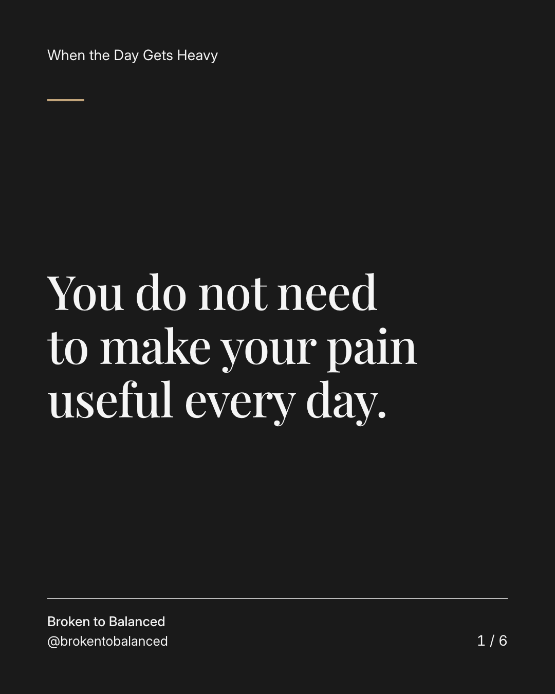
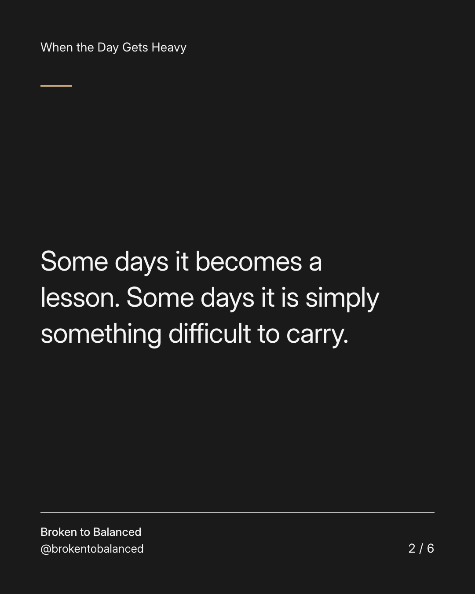
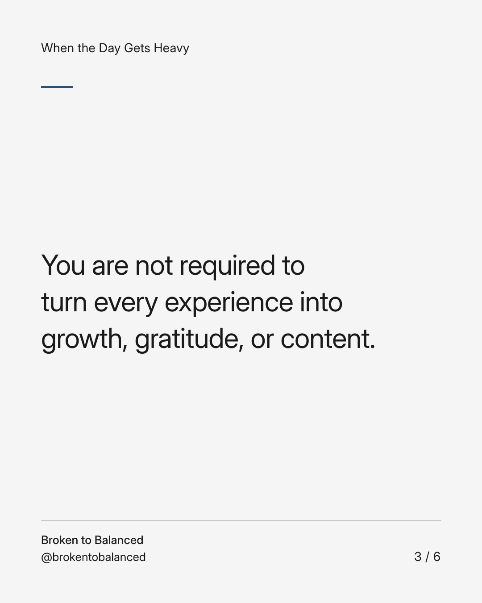
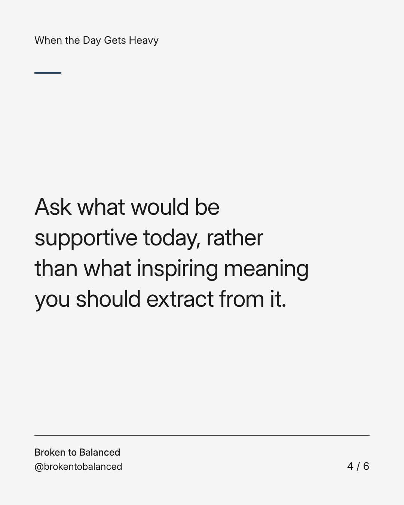
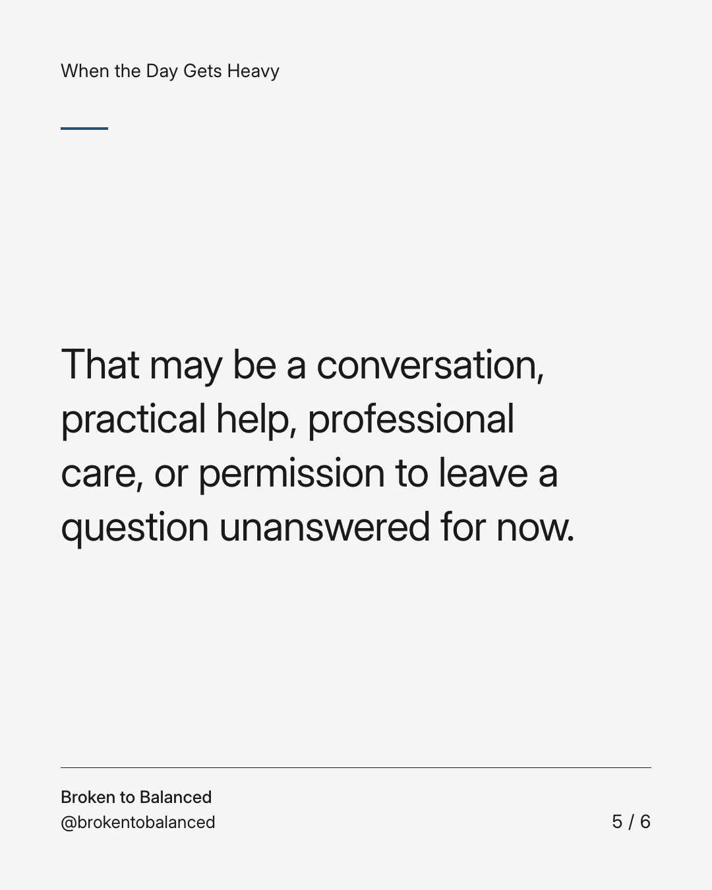
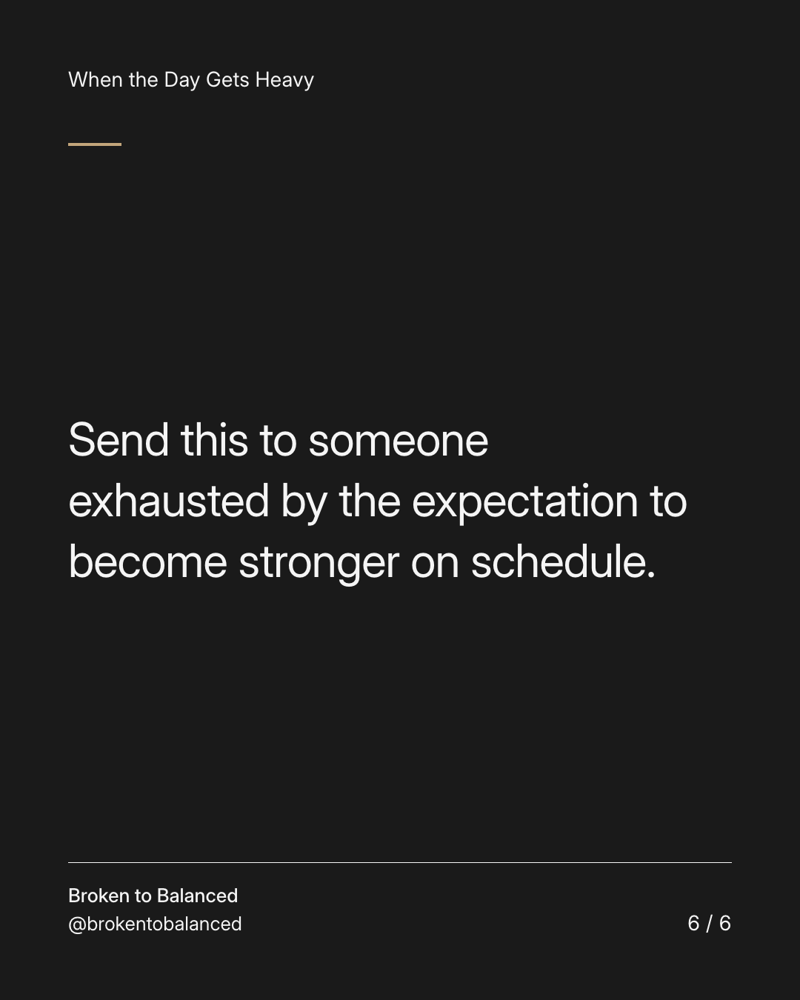

Exact text and accessibility text
You do not need to make your pain useful every day.
Slide 1 of 6. You do not need to make your pain useful every day.


Exact text and accessibility text
Some days it becomes a lesson. Some days it is simply something difficult to carry.
Slide 2 of 6. Some days it becomes a lesson. Some days it is simply something difficult to carry.


Exact text and accessibility text
You are not required to turn every experience into growth, gratitude, or content.
Slide 3 of 6. You are not required to turn every experience into growth, gratitude, or content.


Exact text and accessibility text
Ask what would be supportive today, rather than what inspiring meaning you should extract from it.
Slide 4 of 6. Ask what would be supportive today, rather than what inspiring meaning you should extract from it.


Exact text and accessibility text
That may be a conversation, practical help, professional care, or permission to leave a question unanswered for now.
Slide 5 of 6. That may be a conversation, practical help, professional care, or permission to leave a question unanswered for now.


Exact text and accessibility text
Send this to someone exhausted by the expectation to become stronger on schedule.
Slide 6 of 6. Send this to someone exhausted by the expectation to become stronger on schedule.
Exact caption
Plain-text fallback: select and copy the caption.